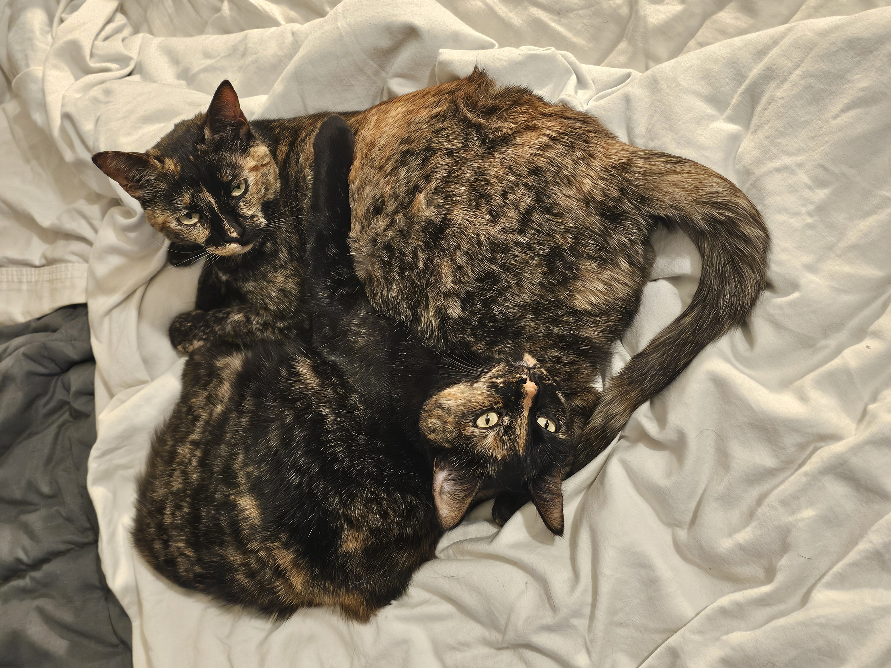

Hello. I'm Matt.
I am a Physics Ph.D. candidate at UC San Diego, specializing in Observational Cosmology. My objective is to apply my astrophysics and data analysis knowledge to deepen our understanding of the universe.

Observational Cosmology & Instrumentation
My current research with the Cosmology Group at UC San Diego centers on the Simons Array and Simons Observatory. My primary work involves analysis of CMB circular polarization data taken with POLARBEAR-2b, from the Simons Array. My work involved data analysis, software development, and hands-on engineering.
Transient Facilities & Supernovae
Previously, I served as a Postbac Researcher for the Zwicky Transient Facility, automating transient classification submissions to TNS and analyzing galactic host statistics. As an undergrad I worked taking transient observations with the Prof. Alexei Filippenko Group, focusing my own personal research on using spectropolarimetry to identify potential CSM properties in Type Ia progenitor environments.
Outreach
Aside from active research, I have a passion for outreach and education. Besides teaching upper division cosmology as an instructor, I have engaged with volunteer opportunities designed to bring my excitement for physics to the local community. Some of these include the Youth Physicist Program, a summer program designed to engage middle school-aged kids in introductory physics concepts with fun demonstrations, and Stem Girl Summer, a program with a similar goal but for more advanced topics and specifically designed for high school-aged girls to begin exploring a career in science.
Beyond Work
Outside of work, I enjoy exploring the local San Diego area. I love to find niche places to hike or OneWheel. I also play in a band (name pending) with fellow physics grad students Chesson Sipling and Sidney Williams, and MAE grad student Blake Carter. At home I like gaming and playing with my cats, Pinto and Garbanzo.
